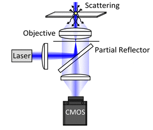
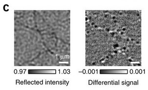
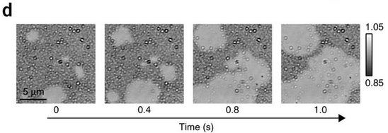
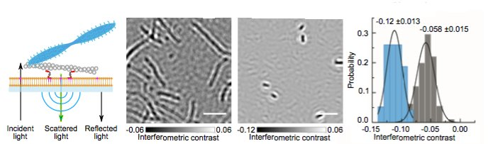
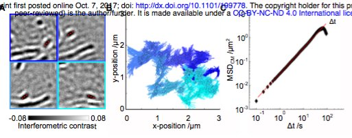

Interferometric scattering microscopy (iSCAT)



Actin and Myosin on bare glass

Actin
Myosin
SLB-linked actin can be tracked

Myosin filaments on SLB-bound actin
Tracking results: two velocity classes (one side-bound versus two sides bound), longer dwell times at low ATP results in contractile network.